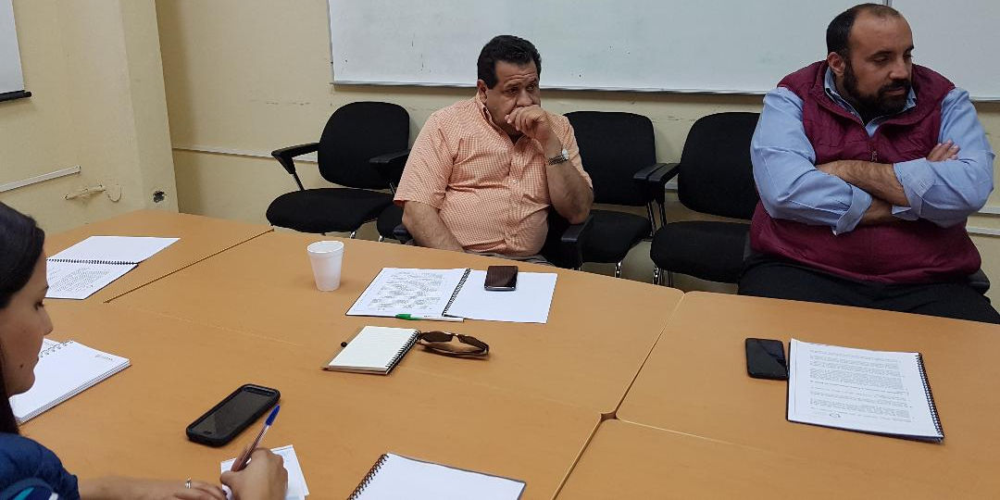

En reunión para conocer el Plan de Trabajo 2018, académicos de la UAAAN proponen acciones a integrantes del Comité de Participación
Sistema Anticorrupción del Estado de Coahuila. Consejo de Participación Ciudadana.
Saltillo, Coahuila.- En reunión con integrantes del cuerpo académico de la Universidad Autónoma Agraria "Antonio Narro" (UAAAN) en el campus Saltillo, miembros del Comité de Participación Ciudadana (CPC) del Sistema Estatal Anticorrupción de Coahuila, recibieron propuestas y sugerencias para iniciar actividades en torno a la prevención, detección y sanción de actos de corrupción en cualquier ámbito del servicio público, incluyendo la academia en esta entidad.
En la Sala de Juntas de la División de Ciencias Socioeconómicas de la UAAAN, el presidente del CPC, Manuel Gil Navarro, acompañado por las consejeras Ana Yuri Solís Gaona y Lourdes de Koster López, presentaron los detalles del Plan de Trabajo 2018 del Consejo de Participación Ciudadana.
Los profesores Vicente Javier Aguirre Moreno, Jefe del Departamento de Economía Agrícola; Lorenzo Alejandro López Barbosa, coordinador de la División de Ciencias Socioeconómicas; Gregorio Castro Rosales, Jefe del Programa Docente de Licenciado en Economía Agrícola y Agro Negocios; Antonio José Fajardo Oyervides, Jefe del Programa Docente de Ingeniero Agrónomo Administrador, así como Norma Sánchez García, Jefa del Departamento de Sociología y Carmen Leticia Ayala López, Jefa de Programa Docente de Ingeniero Agrónomo en Desarrollo Rural, estuvieron en dicha reunión que se llevó a cabo el pasado lunes 19 de febrero de 2018.
Entre las propuestas que señalaron los profesores investigadores de la UAAAN, sobresalen la creación de códigos de ética y la vinculación directa a temas de transparencia y ejercicio del recurso público en un esquema de trabajo que permita atraer la atención y participación de los jóvenes universitarios.
"Nosotros en La Narro, hemos desarrollado acciones como las contralorías sociales y hemos debatido sobre el tema con los alumnos, pero si es necesario que incluso, se realice un mapeo de áreas de oportunidad en nuestra casa de estudios, áreas que son susceptibles a estos asuntos que nos atañen a todos como parte de una comunidad universitaria", dijo el doctor Lorenzo López Barbosa.
Sugirieron además, actividades y charlas en las que se explique a los alumnos los alcances de la legislación vigente en Coahuila en materia de anticorrupción, las autoridades que intervienen y formatos que permitan la presentación de quejas y/o denuncias con protección al denunciante.



19 febrero 2018